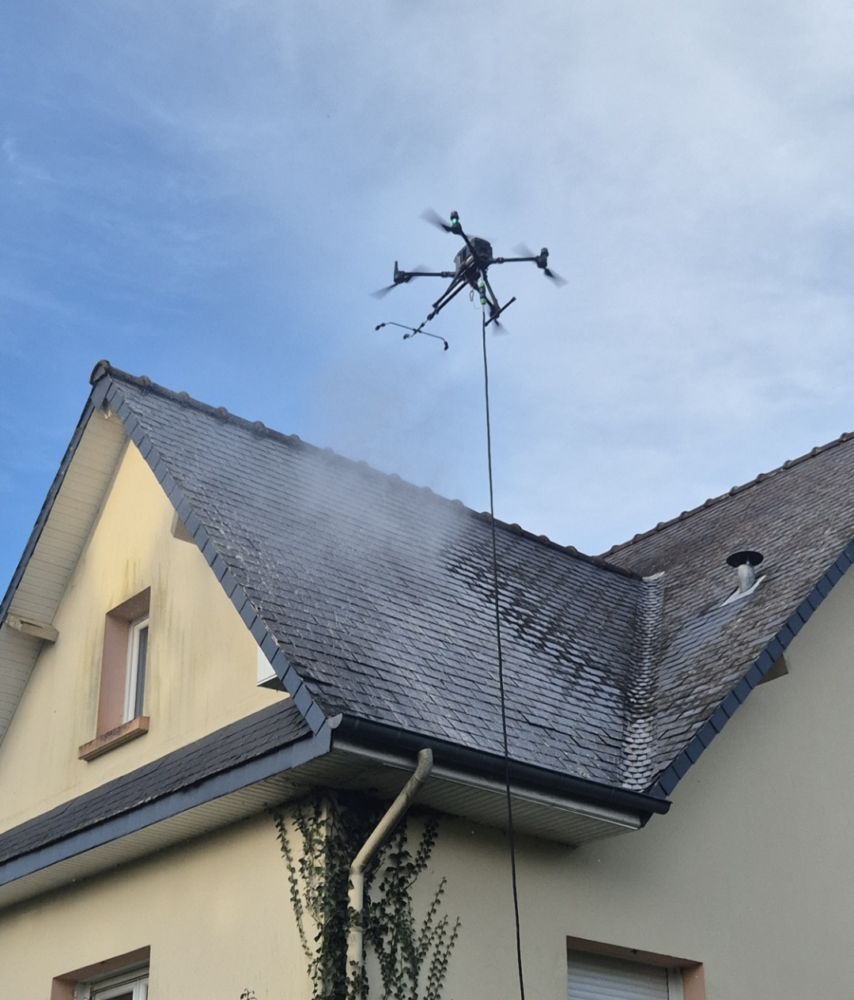

01 / Toitures
Démoussage & traitement hydrofuge
Tuiles, ardoises, fibro-ciment — pulvérisation d'un fongicide biodégradable suivie d'un traitement hydrofuge pour rendre la toiture imperméable et durable.
En savoir plus →Démoussage, traitement hydrofuge et inspection aérienne en Pays de la Loire. Sans échafaudage, sans monter sur le toit : plus rapide, plus sûr, et nettement plus économique.

Du démoussage à l'inspection technique, nos prestations couvrent l'ensemble des besoins extérieurs de votre bâtiment — sans échafaudage, sans nacelle, sans risque.
Tuiles, ardoises, fibro-ciment — pulvérisation d'un fongicide biodégradable suivie d'un traitement hydrofuge pour rendre la toiture imperméable et durable.
En savoir plus →
Nettoyage de tous types de revêtements verticaux — y compris les hauteurs inaccessibles aux méthodes traditionnelles. Résultat visible immédiatement.
En savoir plus →
Évitez la baisse de rendement de vos panneaux : un nettoyage régulier peut augmenter la production jusqu'à 30 %.
En savoir plus →
Monuments historiques, sites industriels, ERP, campings : un protocole adapté à chaque support et à chaque contrainte d'accès.
En savoir plus →
Inspection de toiture avec rapport détaillé. Captation photo et vidéo pour vos projets immobiliers, communication ou suivis de chantier.
En savoir plus →Même toiture — avant et après une intervention LM Drone. Le contraste parle de lui-même.


Comparé aux méthodes traditionnelles, le nettoyage par drone change l'équation sur tous les plans.
Plus besoin de monter sur un toit. Zéro risque de chute, zéro nacelle, zéro échafaudage.
Intervention rapide, logistique minimale, produits biodégradables certifiés Dalep.
Le drone atteint les zones inaccessibles en quelques minutes. Une toiture traitée en 2 à 3 heures.
Pas d'échafaudage, moins de main d'œuvre, moins de temps — un tarif nettement sous le marché classique.
Contactez-nous par téléphone ou via le formulaire en ligne. Vous recevez un email de confirmation, puis votre devis personnalisé sous 48 heures.
Une semaine avant la date retenue, nous reprenons contact pour confirmer le rendez-vous. Nous pouvons intervenir en votre absence.
Mesure de la surface, pulvérisation du fongicide depuis le drone, traitement hydrofuge. Prévoir 2 à 3 heures selon la surface.
Un aperçu des interventions menées sur des toitures résidentielles, des bardages industriels et des bâtiments patrimoniaux.
Retrouvez nos dernières interventions, vidéos de vol et avant/après sur notre compte Instagram.
Glissez vos propres photos Instagram dans les cases ci-dessus pour les afficher ici.
« Intervention propre et rapide. Aucun échafaudage, le drone fait tout. Et le résultat trois mois après est bluffant. »
« Devis sous 48 h, intervention en notre absence, photos après chantier. On a gagné un temps fou. »
« Maxime est précis, ponctuel, et le rapport d'inspection nous a permis de cibler les réparations sans monter sur le toit. »
LM Drone intervient dans l'ensemble des Pays de la Loire — du Maine-et-Loire à la Vendée — ainsi que sur les départements limitrophes.
Nos prestations débutent à 5€/m² et incluent l'inspection, le nettoyage et le traitement hydrofuge. Chaque devis est personnalisé selon la surface, l'état du support et l'accessibilité du site.
Tuiles terre cuite, tuiles béton, ardoises naturelles, fibro-ciment, bac acier, zinc — tous les supports courants en habitat individuel et collectif.
Oui. Pierre, crépi, bardage métallique ou bois — le drone accède aux surfaces verticales sans avoir à monter de nacelle, en quelques minutes.
Le produit pulvérisé agit en 2 heures sans pluie. Les pluies suivantes rincent naturellement la toiture. Les premiers résultats sont visibles en quelques semaines, le résultat final en quelques mois.
Toute la région Pays de la Loire, principalement Maine-et-Loire (Angers, Longuenée en Anjou, Cholet, Saumur) et départements limitrophes (Loire-Atlantique, Vendée, Mayenne, Sarthe).
Non. Si l'accès au site est libre, nous pouvons intervenir en votre absence. L'intervention dure entre 2 et 3 heures selon la surface — prévoir une demi-journée.
Nous travaillons avec Dalep, référence nationale du traitement de surfaces extérieures. Chaque produit est choisi après étude du support, en privilégiant les formulations biodégradables.
Laissez-nous vos coordonnées, nous vous rappelons sous 48 heures pour établir votre devis gratuit.